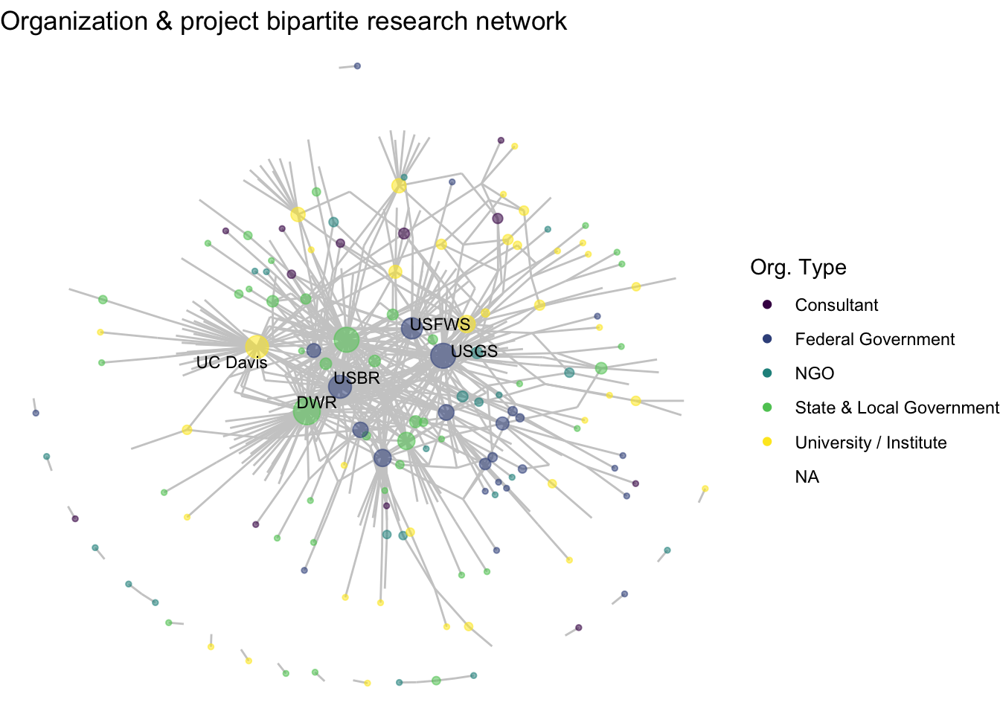
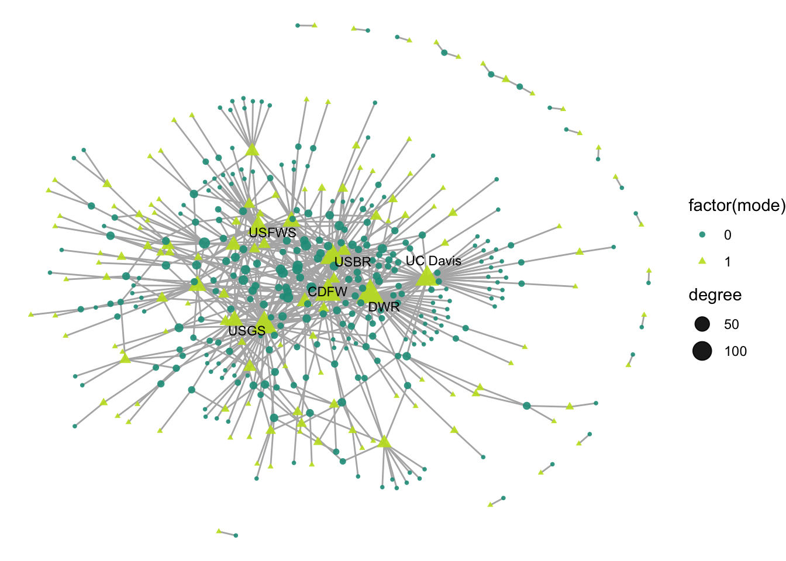
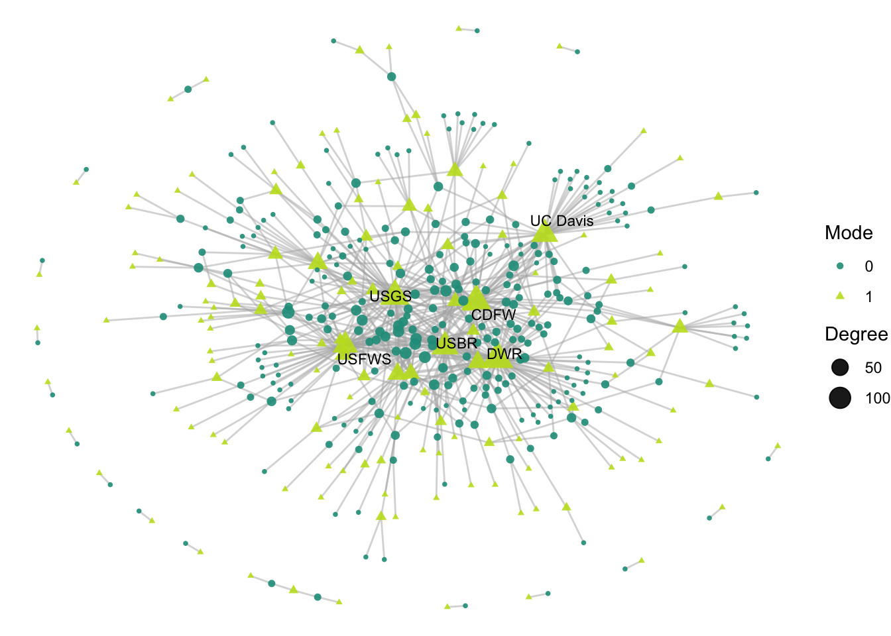
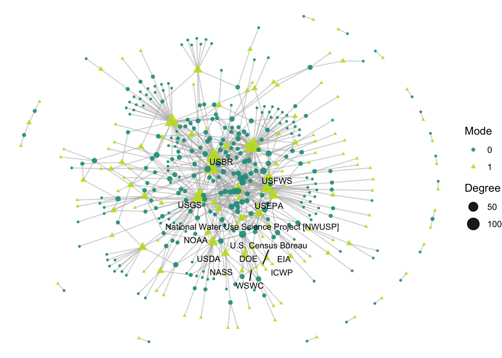
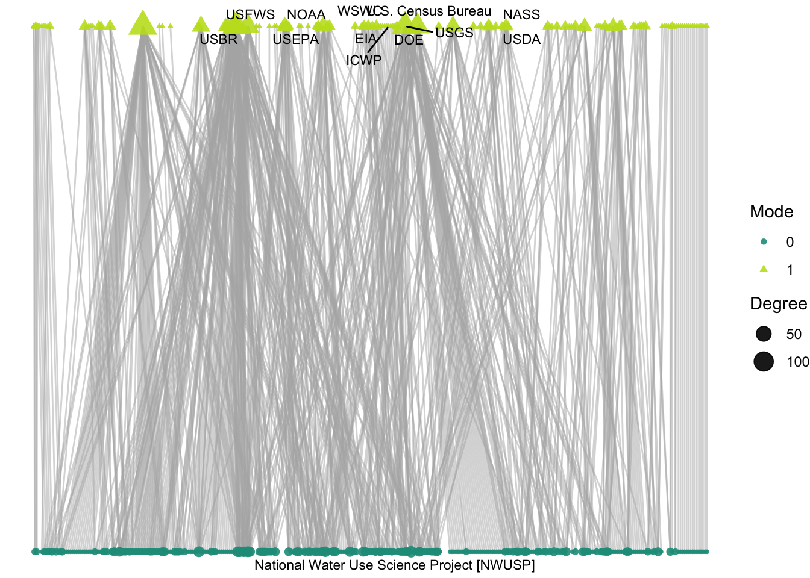
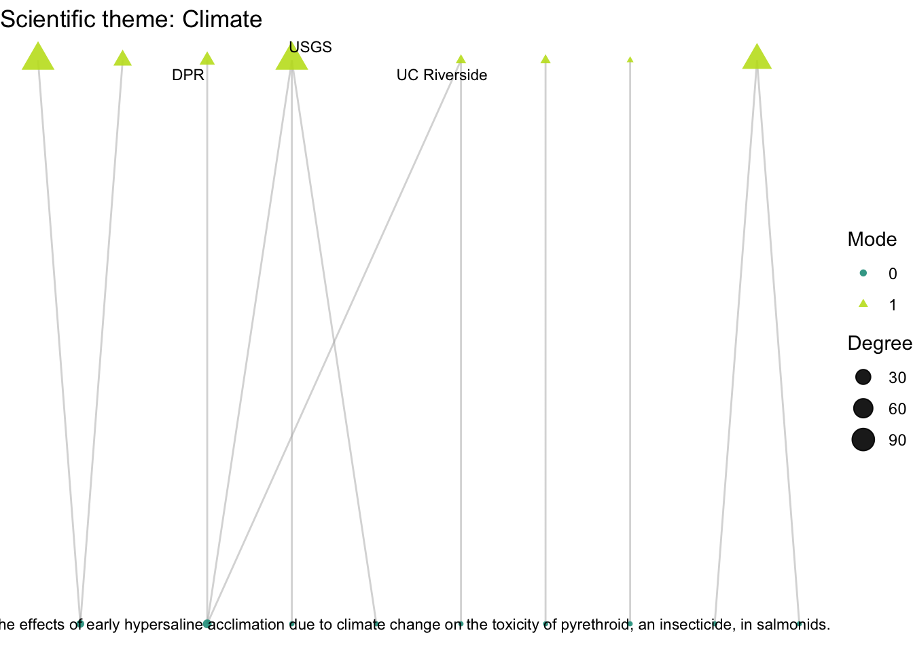
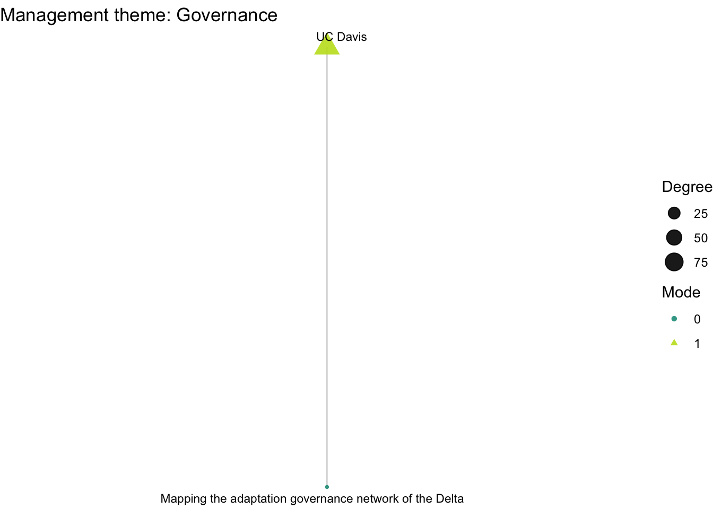
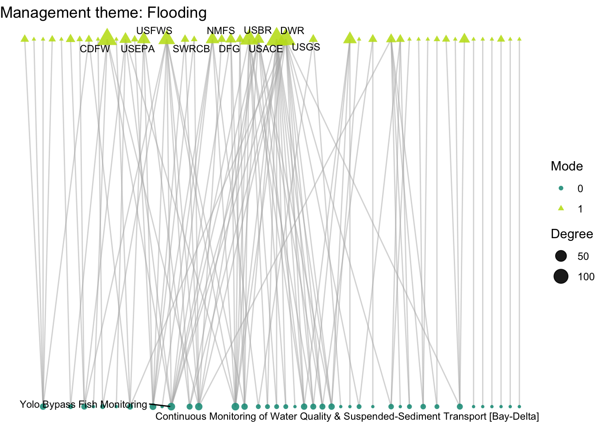

5 Two-mode visualization
5.1 Making two-mode networks:
In this section we are transitioning to working with two-mode networks. That is, a network consisting of two distinctly different types of nodes, where ties are possible between (but not within) each node type. For our data, our two modes are research organizations and projects, where researchers are linked to projects based on their involvement, but in this case there is no link between projects or between researchers.
We started off the workshop by creating one mode networks in igraph and network. The process for creating two-mode, or bipartite, networks is similar, though with some additional complications.
Let’s make sure we have our two mode edge and node lists read in.
edges_2mode <- read.csv('https://raw.githubusercontent.com/ucdavisdatalab/workshop_network_viz/main/data/edgelist_twomode.csv')
nodes_2mode <- read.csv('https://raw.githubusercontent.com/ucdavisdatalab/workshop_network_viz/main/data/nodelist_twomode.csv')First, let’s discuss igraph, where two-mode networks are a bit harder to create. Generally this package has very little two-mode functionality. There is a function for creating bipartite igraphs, make_bipartite_graph(), but it requires different inputs than the standard edge list or matrix, and node lists. Instead, this function requires a vector of vertex types, meaning a Boolean of modes (0-1), and a vector of the edges in the graph.
?igraph::make_bipartite_graph()We won’t walk through the steps on how to do this, but you can reveal the steps below if you want to know more.
Bonus code: How to make a two-mode network from edge list and node list in igraph
# edges need to be a as a vector where each pair is a connection,
# so we can vectorize the edge list (e.g. convert the connection between:
# id 49590 and id 50122 be just paired together as our first two values
# in the vector, and so on
edges_2mode_v <- as.vector(matrix(rbind(edges_2mode$org_id,
edges_2mode$project_id),ncol=1))
# But edges ALSO need to be numbered in a way that is compatible with the nodelist
nodes_2mode$id_numeric <- 1:nrow(nodes_2mode)
# So now we can reassign the edge list
edges_2mode <- left_join(edges_2mode, select(nodes_2mode, id, id_numeric),
by = c('org_id' = 'id')) %>%
rename('org_id_numeric' = 'id_numeric') %>%
left_join(select(nodes_2mode, id, id_numeric),
by = c('project_id' = 'id')) %>%
rename('project_id_numeric' = 'id_numeric')
# And re-make this vector
edges_2mode_v <- as.vector(matrix(rbind(edges_2mode$org_id_numeric,
edges_2mode$project_id_numeric),ncol=1))
# Now we can make the two mode network in igraph
g2 <- igraph::make_bipartite_graph(nodes_2mode$mode, edges_2mode_v, directed = FALSE)
# And we have to manually assign attributes
g2 <- igraph::set_vertex_attr(g2, "id", value = nodes_2mode$id)
g2 <- igraph::set_vertex_attr(g2, "n_years", value = nodes_2mode$n_years)
g2 <- igraph::set_edge_attr(g2, 'leadership', value = edges_2mode$leadership)
g2 <- igraph::set_edge_attr(g2, 'contribution', value = edges_2mode$contribution)In the network package, we can create a bipartite network just like we did with the one-mode network, though now we want to set the bipartite argument to equal TRUE.
net2 <- network(x = edges_2mode,
vertices = nodes_2mode,
bipartite = T,
directed = F)Let’s take a look at the network:
net2## Network attributes:
## vertices = 435
## directed = FALSE
## hyper = FALSE
## loops = FALSE
## multiple = FALSE
## bipartite = 138
## total edges= 680
## missing edges= 0
## non-missing edges= 680
##
## Vertex attribute names:
## enddate funding_org funds id_numeric mgmt_Environmentalconditions mgmt_Floodriskandlandusemanagement mgmt_Governance mgmt_Habitatmanagement mgmt_Invasivenonnativespeciesmanagement mgmt_Nativespeciesmanagement mgmt_Waterquality mgmt_Watersupplymanagement mode n_years name org_type sci_Amphibiansandreptiles sci_Aquaticvegetation sci_Biologicalresourceuse sci_Channelizedhabitats sci_Environmentalconditions sci_Fish sci_Floodplain sci_Foodwebs sci_Habitatchanges sci_Hydrologicchanges sci_Hydrologyandhydrodynamics sci_Invasivenonnativespecies sci_Invertebrates sci_Landuseandhumanactivities sci_Mammals sci_Nutrientsenergyandfoodweb sci_Riparianhabitats sci_Sediment sci_Species sci_Terrestrialhabitats sci_Tidalwetlands sci_Waterquality sci_Weatherandclimate startdate trunc_name url vertex.names
##
## Edge attribute names:
## collaborative_role org_id_numeric project_id_numeric5.2 Guiding questions:
As we shift to working with a two-mode network, let’s again set ourselves up with some questions to guide us. With our two-mode network, we want to know:
- Which Delta science projects have the largest number of collaborators, and who are those collaborators?
- How do organizations’ activity differ across projects with different scientific and management themes: climate, land use, governance, and flooding?
We will be using approaches that are similar to one-mode networks, but there are some features that we will want to rethink given that there are differences given what we can calculate and what we want to communicate.
5.3 Representing two-mode networks
Analytical approaches for two-mode networks are slightly different from one-mode networks given that there are unique structural limitations of two-mode networks. As we’ve discussed already, in two-mode networks there cannot be connections between nodes of the same mode. Because of this, many approaches for summarizing and visualizing one-mode networks are not directly transferable. We’ll start with the one-mode visualization approach that we’ve started with, then build on these to improve our representation of the two-mode features.
5.3.1 The one-mode approach
With one-mode networks, we used sna::degree() function to calculate the number of connections per node, and we can apply this same function to our two-mode network, net2, then run through the functions we’ve made so far to create a plot: label_top_degree() and netplot_function().
net2 %v% 'degree' <- sna::degree(net2)
net2 %v% 'labels' <- label_top_degree(net2, 5)
netplot_function(net2) +
labs(title = "Organization & project bipartite research network")
This is a fine start, but here we aren’t communicating anything about to two-modality of the data. Particularly when we think about our guiding question, which is about projects rather than organizations, we aren’t seeing much. Without any further specification, it just looks like a one-mode network with some central nodes. So, we want to integrate in an important node attribute of our network, mode, telling is which of those points are organizations (mode 1) and which are projects (mode 0).
net2 %v% 'mode'## [1] 1 1 1 1 1 1 1 1 1 1 1 1 1 1 1 1 1 1 1 1 1 1 1 1 1 1 1 1 1 1 1 1 1 1 1 1 1
## [38] 1 1 1 1 1 1 1 1 1 1 1 1 1 1 1 1 1 1 1 1 1 1 1 1 1 1 1 1 1 1 1 1 1 1 1 1 1
## [75] 1 1 1 1 1 1 1 1 1 1 1 1 1 1 1 1 1 1 1 1 1 1 1 1 1 1 1 1 1 1 1 1 1 1 1 1 1
## [112] 1 1 1 1 1 1 1 1 1 1 1 1 1 1 1 1 1 1 1 1 1 1 1 1 1 1 1 0 0 0 0 0 0 0 0 0 0
## [149] 0 0 0 0 0 0 0 0 0 0 0 0 0 0 0 0 0 0 0 0 0 0 0 0 0 0 0 0 0 0 0 0 0 0 0 0 0
## [186] 0 0 0 0 0 0 0 0 0 0 0 0 0 0 0 0 0 0 0 0 0 0 0 0 0 0 0 0 0 0 0 0 0 0 0 0 0
## [223] 0 0 0 0 0 0 0 0 0 0 0 0 0 0 0 0 0 0 0 0 0 0 0 0 0 0 0 0 0 0 0 0 0 0 0 0 0
## [260] 0 0 0 0 0 0 0 0 0 0 0 0 0 0 0 0 0 0 0 0 0 0 0 0 0 0 0 0 0 0 0 0 0 0 0 0 0
## [297] 0 0 0 0 0 0 0 0 0 0 0 0 0 0 0 0 0 0 0 0 0 0 0 0 0 0 0 0 0 0 0 0 0 0 0 0 0
## [334] 0 0 0 0 0 0 0 0 0 0 0 0 0 0 0 0 0 0 0 0 0 0 0 0 0 0 0 0 0 0 0 0 0 0 0 0 0
## [371] 0 0 0 0 0 0 0 0 0 0 0 0 0 0 0 0 0 0 0 0 0 0 0 0 0 0 0 0 0 0 0 0 0 0 0 0 0
## [408] 0 0 0 0 0 0 0 0 0 0 0 0 0 0 0 0 0 0 0 0 0 0 0 0 0 0 0 0To account for mode in our visualization, we could start by adding an aesthetic feature to our visualization, changing the shape and color to be determined by mode.
ggraph(net2, layout = 'fr') +
geom_edge_link(color = "gray70") +
geom_node_point(aes(size = degree,
shape = factor(mode),
color = factor(mode)),
alpha = .9) +
theme_void() +
scale_color_manual(values = clrs[c(7,11)]) +
geom_node_text(aes(label = labels),
size = 3,
color="black",
repel = T, max.overlaps = Inf)
This network has more edges than our one-mode network, so to clean this up a little let’s make our edges thinner and more transparent. Let’s also tidy up the legend label a little.
ggraph(net2, layout = 'fr') +
geom_edge_link(width = 0.5, alpha = 0.5, color = "gray70") +
geom_node_point(aes(size = degree,
shape = factor(mode),
color = factor(mode)),
alpha = .9) +
theme_void() +
scale_color_manual(values = clrs[c(7,11)]) +
geom_node_text(aes(label = labels),
size = 3,
color="black",
repel = T, max.overlaps = Inf) +
labs(size = "Degree", color = "Mode", shape = "Mode")
So now we can see our modes, but still there are a few things that are somewhat misrepresented when we use this approach:
Degree size is skewed by the limitations of the mode. Meaning: due to the nature of how two-mode networks are structured, it is likely that one mode will be more represented than the other. For instance in this case, organizations can participate in multiple projects across time, but projects are limited to the participants involved in the one time span on the project. Because of this, we see that organizations are all highest-degree, and don’t know much about the projects that are highly collaborative.
The layout of the network hides that within-mode connections are not possible. By using one of the more classical layout algorithms that try to limit distance and group similar nodes, it is hard to notice that no two green triangles are connected to one another, nor are there any connections between the circles. So let’s address each of these points.
5.3.2 Assign top labels based on project mode
Instead of assigning labels based on overall degree, we want to calculate the top degrees for just the projects, then the identify the organization nodes who are associated with those top projects. We can use the same skeleton of the code as before, but tweak it to address our question.
# projects are mode 0, so these are interesting to our question
degs_mode0 <- (net2 %v% 'degree')[net2 %v% 'mode' == 0]
degs_mode0 <- degs_mode0[order(degs_mode0, decreasing = T)]
topdegs_mode0 <- unique(degs_mode0)[1]
# identify the most popular projects with labels
net2 %v% 'labels_bip' <- ifelse((net2 %v% 'degree') %in% topdegs_mode0 &
net2 %v% 'mode' == 0, net2 %v% 'name', NA)Now it is these labels that we can use to identify organization linkages
(net2 %v% 'labels_bip')[!is.na(net2 %v% 'labels_bip')]## [1] "National Water Use Science Project [NWUSP]"# make a vector of the top projects
top_projs <- (net2 %v% 'vertex.names')[!is.na(net2 %v% 'labels_bip')]
# identify the organizations associated with top projects using the edge list
related_orgs <- edges_2mode$org_id[edges_2mode$project_id %in% top_projs]
# rename the labels based on whether or not a node is in the related orgs
net2 %v% 'labels_bip' <- ifelse((net2 %v% 'vertex.names') %in% related_orgs &
net2 %v% 'mode' == 1, net2 %v% 'name',
net2 %v% 'labels_bip')Now we can label the nodes by ‘labels_bip’.
ggraph(net2, layout = 'fr') +
geom_edge_link(width = 0.5, alpha = 0.5, color = "gray70") +
geom_node_point(aes(size = degree,
shape = factor(mode),
color = factor(mode)),
alpha = .9) +
theme_void() +
scale_color_manual(values = clrs[c(7,11)]) +
geom_node_text(aes(label = labels_bip),
size = 3,
color="black",
repel = T, max.overlaps = Inf) +
labs(size = "Degree", color = "Mode", shape = "Mode")
5.3.3 Bipartite layout
Next, I want to reconsider layouts that help demonstrate the structural limitations between modes: that there can be no connections between projects or between collaborators. The ‘bipartite’ layout minimizes edge crossing and lines up modes next to one another. However, this layout requires a T/F ‘type’ variable to define the mode, so we can create that using our mode variable.
net2 %v% 'type' <- ifelse(net2 %v% 'mode' == 0, T, F)Now we can specify the layout to bipartite:
ggraph(net2, layout = 'bipartite') +
geom_edge_link(width = 0.5, alpha = 0.5, color = "gray70") +
geom_node_point(aes(size = degree,
shape = factor(mode),
color = factor(mode)),
alpha = .9) +
theme_void() +
scale_color_manual(values = clrs[c(7,11)]) +
geom_node_text(aes(label = labels_bip),
size = 3,
color="black",
repel = T, max.overlaps = Inf) +
labs(size = "Degree", color = "Mode", shape = "Mode")
So, which Delta science projects have the largest number of collaborators, and who are those collaborators? We plot only the project with the largest number of collaborators: National Water Use Science Project. This project heads up the USGS “Water Census”, and has been running since 1950 with 11 different actors involved, largely federal agencies. Some of those agencies, like USFS, are among the most active in the network, but others like USDA are more peripheral.
5.3.4 Functions
What we’ve set up so far feels like a solid foundation for a bipartite plotting function, so as before, let’s bundle this up into a function to use more later by just replacing the name of the network, net2, with a generic ‘netname’.
plot_bipartite_fx <- function(netname){
p <- ggraph(netname, layout = 'bipartite') +
geom_edge_link(width = 0.5, alpha = 0.5, color = "gray70") +
geom_node_point(aes(size = degree,
shape = factor(mode),
color = factor(mode)),
alpha = .9) +
theme_void() +
scale_color_manual(values = clrs[c(7,11)]) +
geom_node_text(aes(label = labels_bip),
size = 3,
color="black",
repel = T, max.overlaps = Inf) +
labs(size = "Degree", color = "Mode", shape = "Mode")
return(p)
}We can also set ourselves up by making another function to assign labels for the top projects and their associated organizations:
assign_bipartite_labels <- function(netname, n){
degs_mode0 <- (netname %v% 'degree')[netname %v% 'mode' == 0]
degs_mode0 <- degs_mode0[order(degs_mode0, decreasing = T)]
topdegs_mode0 <- unique(degs_mode0)[1:n]
netname %v% 'labels_bip' <- ifelse((netname %v% 'degree') %in% topdegs_mode0 &
netname %v% 'mode' == 0, netname %v% 'name', NA)
top_projs <- (netname %v% 'vertex.names')[!is.na(netname %v% 'labels_bip')]
related_orgs <- edges_2mode$org_id[edges_2mode$project_id %in% top_projs]
labels <- ifelse((netname %v% 'vertex.names') %in% related_orgs &
netname %v% 'mode' == 1, netname %v% 'name',
netname %v% 'labels_bip')
return(labels)
}5.4 Themed projects
Lets now turn to think more about nodes with the second guiding question: How do organizations’ activity differ across projects with different scientific and management themes: climate, land use, governance, and flooding? Where we previously induced subgraphs based on edge attributes, we now want to compare subgraphs based on node attributes. Let’s get to it.
5.4.1 Inducing bipartite network by nodes
We have scientific and management themes attributes to different projects, and we can identify the nodes for which those attributes are true.
climate <- which(net2 %v% 'sci_Weatherandclimate' == T)
landuse <- which(net2 %v% 'sci_Landuseandhumanactivities' == T)
govnc <- which(net2 %v% 'mgmt_Governance' == T)
flood <- which(net2 %v% 'mgmt_Floodriskandlandusemanagement' == T)
head(climate)## [1] 155 189 365 390 391 397However, we only have this theme attribute for nodes in the project mode, which means that the induced network will have zero edges – it is not possible for projects to have ties to one another.
net2_cli <- get.inducedSubgraph(net2, v = climate)
net2_cli## Network attributes:
## vertices = 9
## directed = FALSE
## hyper = FALSE
## loops = FALSE
## multiple = FALSE
## bipartite = 0
## total edges= 0
## missing edges= 0
## non-missing edges= 0
##
## Vertex attribute names:
## degree degree_norm_bip enddate funding_org funds id_numeric labels labels_bip mgmt_Environmentalconditions mgmt_Floodriskandlandusemanagement mgmt_Governance mgmt_Habitatmanagement mgmt_Invasivenonnativespeciesmanagement mgmt_Nativespeciesmanagement mgmt_Waterquality mgmt_Watersupplymanagement mode n_years name org_type sci_Amphibiansandreptiles sci_Aquaticvegetation sci_Biologicalresourceuse sci_Channelizedhabitats sci_Environmentalconditions sci_Fish sci_Floodplain sci_Foodwebs sci_Habitatchanges sci_Hydrologicchanges sci_Hydrologyandhydrodynamics sci_Invasivenonnativespecies sci_Invertebrates sci_Landuseandhumanactivities sci_Mammals sci_Nutrientsenergyandfoodweb sci_Riparianhabitats sci_Sediment sci_Species sci_Terrestrialhabitats sci_Tidalwetlands sci_Waterquality sci_Weatherandclimate startdate trunc_name type url vertex.names
##
## No edge attributesSo we also need to identify the organization alters related to the relevant projects.
climate_alter_ids <- edges_2mode$org_id[edges_2mode$project_id %in%
(net2 %v% 'vertex.names')[climate]]
landuse_alter_ids <- edges_2mode$org_id[edges_2mode$project_id %in%
(net2 %v% 'vertex.names')[landuse]]
govnc_alter_ids <- edges_2mode$org_id[edges_2mode$project_id %in%
(net2 %v% 'vertex.names')[govnc]]
flood_alter_ids <- edges_2mode$org_id[edges_2mode$project_id %in%
(net2 %v% 'vertex.names')[flood]]This approach gets us nearly there. We have their actual ids, but when we induce a network we want to use their numeric representation in the network object, so we have to further extract that.
climate_alters <- which(net2 %v% 'vertex.names' %in% climate_alter_ids)
landuse_alters <- which(net2 %v% 'vertex.names' %in% landuse_alter_ids)
govnc_alters <- which(net2 %v% 'vertex.names' %in% govnc_alter_ids)
flood_alters <- which(net2 %v% 'vertex.names' %in% flood_alter_ids)Now we have the ego’s location in the network, which we can set to our v argument, and their alter’s location in the network, which we can set to our alter argument.
net2_cli <- network::get.inducedSubgraph(net2,
v = climate,
alters = climate_alters)
net2_landuse <- network::get.inducedSubgraph(net2,
v = landuse,
alters = landuse_alters)
net2_govnc <- network::get.inducedSubgraph(net2,
v = govnc,
alters = govnc_alters)
net2_flood <- network::get.inducedSubgraph(net2,
v = flood,
alters = flood_alters)We get a warning: ‘I hope you know what you’re doing…’. Me too. Assuming we do, let’s take a look:
net2_flood## Network attributes:
## vertices = 83
## directed = FALSE
## hyper = FALSE
## loops = FALSE
## multiple = FALSE
## bipartite = 39
## total edges= 114
## missing edges= 0
## non-missing edges= 114
##
## Vertex attribute names:
## degree degree_norm_bip enddate funding_org funds id_numeric labels labels_bip mgmt_Environmentalconditions mgmt_Floodriskandlandusemanagement mgmt_Governance mgmt_Habitatmanagement mgmt_Invasivenonnativespeciesmanagement mgmt_Nativespeciesmanagement mgmt_Waterquality mgmt_Watersupplymanagement mode n_years name org_type sci_Amphibiansandreptiles sci_Aquaticvegetation sci_Biologicalresourceuse sci_Channelizedhabitats sci_Environmentalconditions sci_Fish sci_Floodplain sci_Foodwebs sci_Habitatchanges sci_Hydrologicchanges sci_Hydrologyandhydrodynamics sci_Invasivenonnativespecies sci_Invertebrates sci_Landuseandhumanactivities sci_Mammals sci_Nutrientsenergyandfoodweb sci_Riparianhabitats sci_Sediment sci_Species sci_Terrestrialhabitats sci_Tidalwetlands sci_Waterquality sci_Weatherandclimate startdate trunc_name type url vertex.names
##
## Edge attribute names:
## collaborative_role org_id_numeric project_id_numericLook’s alright. So now let’s assign the appropriate labels to each of these subgraphs.
net2_cli %v% 'labels_bip' <- assign_bipartite_labels(net2_cli, 1)
net2_landuse %v% 'labels_bip' <- assign_bipartite_labels(net2_landuse, 1)
net2_govnc %v% 'labels_bip' <- assign_bipartite_labels(net2_govnc, 1)
net2_flood %v% 'labels_bip' <- assign_bipartite_labels(net2_flood, 1)Last, we want to plot them!
plot_bipartite_fx(net2_cli) + labs(title = "Scientific theme: Climate")
plot_bipartite_fx(net2_landuse) + labs(title = "Scientific theme: Land use")
plot_bipartite_fx(net2_govnc) + labs(title = "Management theme: Governance")
plot_bipartite_fx(net2_flood) + labs(title = "Management theme: Flooding") How do organizations’ activity differ across projects with different scientific and management themes: climate, land use, governance, and flooding?